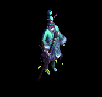
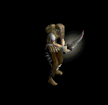
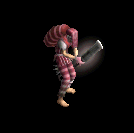
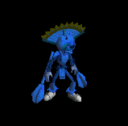
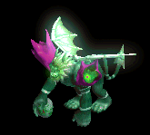
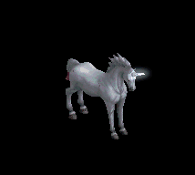

CP回復ポーション をドロップするmob一覧
一覧ページへ
| ドラキュラ | アンデット | ボス1 | |||||||
|---|---|---|---|---|---|---|---|---|---|
 | 鞭(470) | 笛(310) | cP回復(470) | 職業鎧(260) | 指輪(240) | 特殊1(190) | |||
| ワイト | アンデット | セミ3 | |||||||
 | 杖(450) | 投擲(300) | cP回復(450) | グローブ(250) | 冠(230) | ブローチ(300) | 本(450) | ||
| デビルスカラー | 人間 | 一般4 | |||||||
 | 鞭(300) | 牙(200) | cP回復(300) | 腰(170) | イヤリング(150) | 肩刺青(130) | 双剣(200) | ||
| 堕落予言者 | 人間 | ボス1 | |||||||
 | 鞭(470) | 投擲(310) | cP回復(470) | 腰(260) | イヤリング(240) | 肩刺青(150) | |||
| レッドアイ幹部 | 人間 | セミ1 | |||||||
 | ステッキ(390) | 鞭(260) | cP回復(390) | マント(220) | 冠(200) | ブローチ(190) | |||
| オーバーシアー | 悪魔 | ボス2 | |||||||
 | 投擲(490) | 翼(330) | cP回復(490) | 兜・帽子(270) | 冠(250) | 帰還(200) | 水晶(330) | ||
| デーモン | 悪魔 | セミ2 | |||||||
 | 鞭(420) | 杖(280) | cP回復(420) | 腰(230) | 指輪(210) | 十字架(200) | 本(280) | ||
| バフォメット | 悪魔 | ボス3 | |||||||
 | 槍(510) | 鞭(340) | cP回復(510) | 足(280) | 槍投擲機(260) | 特殊1(200) | 箒(510) | ||
| トライアングル | 動物 | セミ1 | |||||||
 | ステッキ(390) | 杖(260) | cP回復(390) | 鎧(220) | 冠(200) | 能力向上2(160) | 本(260) | ||
| ダイアーウルフ | 動物 | セミ2 | |||||||
 | 牙(420) | 鈍器(280) | cP回復(420) | 足(230) | 槍投擲機(210) | 特殊1(170) | 双剣(420) | ||
| ドラキュラEx | アンデット | ボス1 | |||||||
| 鞭(1200) | 笛(800) | cP回復(1200) | 職業鎧(670) | 指輪(600) | ブローチ(400) | |||
| ワイトEx | アンデット | セミ3 | |||||||
| 杖(800) | 投擲(530) | cP回復(800) | グローブ(440) | 冠(400) | 宝石(320) | 本(800) | ||
| デビルスカラーEx | 人間 | 一般4 | |||||||
| 鞭(300) | 牙(200) | cP回復(300) | 腰(170) | イヤリング(150) | 肩刺青(130) | 双剣(200) | ||
| 堕落予言者Ex | 人間 | ボス1 | |||||||
| 鞭(1200) | 投擲(800) | cP回復(1200) | 腰(670) | イヤリング(600) | 肩刺青(150) | |||
| レッドアイ幹部Ex | 人間 | セミ1 | |||||||
| ステッキ(450) | 鞭(300) | cP回復(450) | マント(250) | 冠(230) | ブローチ(190) | |||
| オーバーシアーEx | 悪魔 | ボス2 | |||||||
| 投擲(2000) | 翼(1330) | cP回復(2000) | 兜・帽子(1110) | 冠(1000) | 帰還(800) | 水晶(1330) | ||
| デーモンEx | 悪魔 | セミ2 | |||||||
| 鞭(650) | 杖(430) | cP回復(650) | 腰(360) | 指輪(330) | 十字架(200) | 本(430) | ||
| バフォメットEx | 悪魔 | ボス3 | |||||||
| 槍(2800) | 鞭(1870) | cP回復(2800) | 足(1560) | 槍投擲機(1400) | 特殊1(1120) | 箒(2800) | ||
| トライアングルEx | 動物 | セミ1 | |||||||
| ステッキ(450) | 杖(300) | cP回復(450) | 鎧(250) | 冠(230) | 能力向上2(180) | 本(300) | ||
| ダイアーウルフEx | 動物 | セミ2 | |||||||
| 牙(650) | 鈍器(430) | cP回復(650) | 足(360) | 槍投擲機(330) | 特殊1(260) | 双剣(650) | ||
| トレントEx | 神獣 | 一般4 | |||||||
 | 杖(300) | 両手剣(200) | cP回復(300) | 腰(170) | 冠(150) | 能力向上1(120) | 鎌(200) | 本(300) | |
| エントEx | 神獣 | ボス1 | |||||||
 | 杖(1200) | 槍(800) | cP回復(1200) | 腰(670) | イヤリング(600) | 能力向上1(480) | 本(1200) | 箒(800) | |
| ドラキュラZin | アンデット | ボス1 | |||||||
| 鞭(1000) | 笛(670) | cP回復(1000) | 職業鎧(560) | 指輪(500) | ブローチ(400) | |||
| ワイトZin | アンデット | セミ3 | |||||||
| 杖(900) | 投擲(600) | cP回復(900) | グローブ(500) | 冠(450) | 宝石(360) | 本(900) | ||
| デビルスカラーZin | 人間 | 一般4 | |||||||
| 鞭(1200) | 牙(800) | cP回復(1200) | 腰(670) | イヤリング(600) | 肩刺青(130) | 双剣(800) | ||
| 堕落予言者Zin | 人間 | ボス1 | |||||||
| 鞭(1000) | 投擲(670) | cP回復(1000) | 腰(560) | イヤリング(500) | 肩刺青(150) | |||
| レッドアイ幹部Zin | 人間 | セミ1 | |||||||
| ステッキ(650) | 鞭(430) | cP回復(650) | マント(360) | 冠(330) | ブローチ(190) | |||
| オーバーシアーZin | 悪魔 | ボス2 | |||||||
| 投擲(1100) | 翼(730) | cP回復(1100) | 兜・帽子(610) | 冠(550) | 帰還(440) | 水晶(730) | ||
| デーモンZin | 悪魔 | セミ2 | |||||||
| 鞭(750) | 杖(500) | cP回復(750) | 腰(420) | 指輪(380) | 十字架(200) | 本(500) | ||
| バフォメットZin | 悪魔 | ボス3 | |||||||
| 槍(1200) | 鞭(800) | cP回復(1200) | 足(670) | 槍投擲機(600) | 特殊1(480) | 箒(1200) | ||
| トライアングルZin | 動物 | セミ1 | |||||||
| ステッキ(650) | 杖(430) | cP回復(650) | 鎧(360) | 冠(330) | 能力向上2(260) | 本(430) | ||
| ダイアーウルフZin | 動物 | セミ2 | |||||||
| 牙(750) | 鈍器(500) | cP回復(750) | 足(420) | 槍投擲機(380) | 特殊1(300) | 双剣(750) | ||
| トレントZin | 神獣 | 一般4 | |||||||
| 杖(1200) | 両手剣(800) | cP回復(1200) | 腰(670) | 冠(600) | 能力向上1(480) | 鎌(800) | 本(1200) | |
| エントZin | 神獣 | ボス1 | |||||||
| 杖(1000) | 槍(670) | cP回復(1000) | 腰(560) | イヤリング(500) | 能力向上1(400) | 本(1000) | 箒(670) | |
| バイキングヘッド4 Zin | アンデット | ボス3 | |||||||
 | 冠(360) | cP回復(600) | 宝石(1080) | 職業鎧(1560) | ステッキ(2040) | 杖(2400) | 本(2400) | ||
| アンデッド魔法師3 Zin | アンデット | セミ2 | |||||||
 | 能力向上2(80) | マント(140) | cP回復(250) | 十字架(360) | 状態異常回復1(470) | イベント(550) | |||
| アンデッドライト1 Zin | アンデット | セミ1 | |||||||
|  | 鍵(50) | 状態異常回復2(90) | 帰還(160) | cP回復(230) | 矢(300) | イベント(350) | 魔弾(300) | ||
| ボーンキメラ3 Zin | アンデット | ボス1 | |||||||
 | 片手剣(150) | 首(250) | 宝石(450) | cP回復(650) | 肩刺青(850) | HP回復(1000) | クロー(150) | ||
| ブルーエリゲイト2 Zin | アンデット | セミ3 | |||||||
 | 片手剣(110) | 状態異常回復2(180) | cP回復(320) | 職業鎧(460) | 槍投擲機(600) | 兜・帽子(700) | クロー(110) | ||
| ハイエルフ4 Zin | 人間 | ボス2 | |||||||
 | 片手剣(450) | ブローチ(1350) | cP回復(900) | 槍(720) | 肩刺青(180) | 兜・帽子(270) | クロー(450) | 箒(720) | |
| エルフ貴族 Zin | 人間 | 一般4 | |||||||
 | 能力向上2(50) | イヤリング(150) | 足(100) | cP回復(80) | 能力向上2(20) | HP回復(30) | |||
| エルフガーディア Zin | 人間 | セミ1 | |||||||
 | 片手剣(90) | 状態異常回復2(260) | 足(180) | 十字架(140) | 槍投擲機(40) | cP回復(50) | クロー(90) | ||
| エルフガーディア4 Zin | 人間 | ボス3 | |||||||
 | 片手剣(600) | イヤリング(1800) | 足(1200) | cP回復(960) | 槍投擲機(240) | 兜・帽子(360) | クロー(600) | ||
| シーク信者(踊り子)1 Zin | 人間 | セミ1 | |||||||
 | 宝石(90) | 首(260) | スリング(180) | 手首(140) | 状態異常回復1(40) | cP回復(50) | |||
| シーク信者(踊り子)3 Zin | 人間 | ボス2 | |||||||
 | 鎧(450) | 首(1350) | cP回復(900) | 手首(720) | 腰(180) | 翼(270) | 水晶(270) | ||
| 逃亡魔法師1 Zin | 人間 | 一般4 | |||||||
 | 両手剣(50) | ブローチ(150) | cP回復(100) | 職業鎧(80) | 状態異常回復1(20) | 杖(30) | 鎌(50) | 本(30) | |
| 逃亡魔法師2 Zin | 人間 | セミ1 | |||||||
 | 投擲(90) | cP回復(260) | 両手剣(180) | 槍(140) | ステッキ(40) | HP回復(50) | 鎌(180) | 箒(140) | |
| 逃亡ハンター3 Zin | 人間 | ボス1 | |||||||
|  | 宝石(250) | 状態異常回復2(750) | 両手剣(500) | cP回復(400) | 鞭(100) | イベント(150) | 鎌(500) | ||
| 脱獄犯 Zin | 人間 | セミ1 | |||||||
 | 投擲(90) | ブローチ(260) | 両手剣(180) | 十字架(140) | 肩刺青(40) | cP回復(50) | 鎌(140) | ||
| 脱獄犯1 Zin | 人間 | セミ2 | |||||||
|  | 鍵(140) | 鈍器(410) | 帰還(280) | cP回復(220) | ステッキ(60) | グローブ(80) | |||
| ゴールデンマスク4 Zin | 悪魔 | ボス3 | |||||||
 | 片手剣(1560) | 爪(1920) | cP回復(790) | 鞭(480) | 矢(240) | イベント(120) | クロー(1560) | 魔弾(240) | |
| 古代悪魔2 Zin | 悪魔 | セミ3 | |||||||
 | 指輪(460) | 首(560) | 帰還(230) | 手首(140) | 肩刺青(70) | cP回復(40) | |||
| 死神2 Zin | 悪魔 | セミ3 | |||||||
 | 鍵(460) | 首(560) | cP回復(230) | 手首(140) | 弓(70) | イベント(40) | 銃(70) | ||
| 魔女1 Zin | 悪魔 | セミ1 | |||||||
 | 鎧(230) | ブローチ(280) | cP回復(120) | 笛(70) | ステッキ(40) | イベント(20) | |||
| サキュバス3 Zin | 悪魔 | ボス2 | |||||||
 | 鎧(1170) | 状態異常回復2(1440) | 足(590) | 笛(360) | ステッキ(180) | cP回復(90) | |||
| カマキリ戦士4 Zin | 悪魔 | ボス3 | |||||||
 | 投擲(1560) | 鈍器(1920) | cP回復(790) | 槍(480) | 腰(240) | 翼(120) | 箒(480) | 水晶(120) | |
| ペンティライダー2 Zin | 悪魔 | セミ3 | |||||||
 | 投擲(460) | 状態異常回復2(560) | cP回復(230) | 能力向上1(140) | 肩刺青(70) | 翼(40) | 水晶(40) | ||
| バッタ悪魔 Zin | 悪魔 | 一般4 | |||||||
 | 投擲(130) | 鈍器(160) | 帰還(70) | cP回復(40) | 腰(20) | HP回復(10) | |||
| バッタ悪魔1 Zin | 悪魔 | セミ1 | |||||||
 | 能力向上2(230) | cP回復(280) | 弾(120) | 槍(70) | 状態異常回復1(40) | 翼(20) | 箒(70) | 水晶(20) | |
| バッタ悪魔4 Zin | 悪魔 | ボス2 | |||||||
 | 投擲(1170) | 状態異常回復2(1440) | cP回復(590) | 槍(360) | 腰(180) | 翼(90) | 箒(360) | 水晶(90) | |
| パンプキンヘッド2 Zin | 悪魔 | セミ3 | |||||||
 | 鍵(460) | ブローチ(560) | cP回復(230) | 笛(140) | 腰(70) | グローブ(40) | |||
| エルダーパンプキン4 Zin | 悪魔 | ボス3 | |||||||
|  | 能力向上2(1560) | 首(1920) | cP回復(790) | 笛(480) | 腰(240) | グローブ(120) | |||
| ウィングコング Zin | 動物 | セミ1 | |||||||
 | 冠(120) | イヤリング(90) | 牙(70) | 能力向上2(50) | 肩刺青(40) | cP回復(20) | 双剣(70) | ||
| ウィングコング2 Zin | 動物 | セミ3 | |||||||
|  | 冠(250) | イヤリング(180) | 牙(140) | cP回復(110) | 肩刺青(70) | HP回復(40) | 双剣(140) | ||
| ハリネズミカエル3 Zin | 動物 | ボス2 | |||||||
 | 両手剣(630) | 状態異常回復2(450) | 足(360) | 槍(270) | 槍投擲機(180) | cP回復(90) | 鎌(630) | 箒(270) | |
| ハリネズミカエル4 Zin | 動物 | ボス3 | |||||||
 | 投擲(840) | 爪(600) | cP回復(480) | cP回復(360) | 槍投擲機(240) | 杖(120) | 本(120) | ||
| カメレオン2 Zin | 動物 | セミ3 | |||||||
 | 冠(250) | 鈍器(180) | 帰還(140) | 十字架(110) | cP回復(70) | 盾(40) | |||
| ラジエータカメ2 Zin | 動物 | ボス1 | |||||||
 | 鍵(350) | 鈍器(250) | cP回復(200) | 鞭(150) | 弓(100) | 盾(50) | 銃(100) | ||
| 装甲亀1 Zin | 動物 | セミ2 | |||||||
 | 冠(190) | 鈍器(140) | cP回復(110) | 鞭(80) | 弓(60) | 盾(30) | 銃(60) | ||
| ダークバッファロ Zin | 神獣 | 一般3 | |||||||
 | 能力向上2(120) | 爪(170) | cP回復(90) | 能力向上1(10) | 腰(30) | イベント(70) | |||
| ユニコーン3 Zin | 神獣 | ボス2 | |||||||
|  | 冠(810) | マント(1170) | 牙(630) | 槍(90) | cP回復(180) | イベント(450) | 箒(90) | 双剣(630) | |
| ペガサス4 Zin | 神獣 | ボス3 | |||||||
 | 冠(1080) | マント(1560) | 牙(840) | 槍(120) | 弓(240) | cP回復(600) | 箒(120) | 双剣(840) | 銃(240) |
| 使徒1 Zin | 神獣 | セミ1 | |||||||
 | 能力向上2(160) | 鈍器(230) | スリング(120) | 笛(20) | cP回復(40) | 盾(90) | |||
| 堕天使2 Zin | 神獣 | セミ3 | |||||||
 | 投擲(320) | イヤリング(460) | 足(250) | 手首(40) | cP回復(70) | グローブ(180) | |||
| ライオンヘッド Zin | 神獣 | セミ1 | |||||||
 | 投擲(160) | イヤリング(230) | cP回復(120) | 能力向上2(20) | ステッキ(40) | イベント(90) | |||
| ライオンヘッド4 Zin | 神獣 | ボス3 | |||||||
 | 鍵(1080) | イヤリング(1560) | 足(840) | 手首(120) | cP回復(240) | グローブ(600) | |||
| レッドアイ隊員 | 人間 | セミ1 | |||||||
| ステッキ(390) | 鞭(260) | cP回復(390) | マント(220) | 冠(200) | ブローチ(190) | |||
| レッドアイ隊員 Ex | 人間 | セミ1 | |||||||
| ステッキ(450) | 鞭(300) | cP回復(450) | マント(250) | 冠(230) | ブローチ(190) | |||
| イビルアイ | 悪魔 | ボス2 | |||||||
| 投擲(490) | 翼(330) | cP回復(490) | 兜・帽子(270) | 冠(250) | 帰還(200) | 水晶(330) | ||
| エビルアイ Ex | 悪魔 | ボス2 | |||||||
| 投擲(2000) | 翼(1330) | cP回復(2000) | 兜・帽子(1110) | 冠(1000) | 帰還(800) | 水晶(1330) | ||
| 神秘の亀 | 動物 | セミ1 | |||||||
| ステッキ(390) | 杖(260) | cP回復(390) | 鎧(220) | 冠(200) | 能力向上2(160) | 本(260) | ||
| 神秘の亀 Ex | 動物 | セミ1 | |||||||
| ステッキ(450) | 杖(300) | cP回復(450) | 鎧(250) | 冠(230) | 能力向上2(180) | 本(300) | ||
| ヴァンパイア公爵 | アンデット | ボス1 | |||||||
| 鞭(470) | 笛(310) | cP回復(470) | 職業鎧(260) | 指輪(240) | 特殊1(190) | |||
| ヴァンパイア公爵 Ex | アンデット | ボス1 | |||||||
| 鞭(1200) | 笛(800) | cP回復(1200) | 職業鎧(670) | 指輪(600) | ブローチ(400) | |||
| バフォメット | 悪魔 | ボス3 | |||||||
| 槍(510) | 鞭(340) | cP回復(510) | 足(280) | 槍投擲機(260) | 特殊1(200) | 箒(510) | ||
| バフォメット Ex | 悪魔 | ボス3 | |||||||
| 槍(2800) | 鞭(1870) | cP回復(2800) | 足(1560) | 槍投擲機(1400) | 特殊1(1120) | 箒(2800) | ||
| ゴルゴン Zin | 神獣 | 一般4 | |||||||
| 能力向上2(120) | 爪(170) | cP回復(90) | 能力向上1(10) | 腰(30) | イベント(70) | |||
| 時の大樹 Zin | 神獣 | セミ1 | |||||||
| 杖(1200) | 両手剣(800) | cP回復(1200) | 腰(670) | 冠(600) | 能力向上1(480) | 鎌(800) | 本(1200) | |
| デビルスカラー Ex[2] | 人間 | 一般4 | |||||||
| 鞭(300) | 牙(200) | cP回復(300) | 腰(170) | イヤリング(150) | 肩刺青(130) | 双剣(200) | ||
| ゴルゴン Zin | 神獣 | 一般4 | |||||||
| 能力向上2(120) | 爪(170) | cP回復(90) | 能力向上1(10) | 腰(30) | イベント(70) | |||
| トレントEv | 神獣 | 一般4 | |||||||
| 杖(1200) | 両手剣(800) | cP回復(1200) | 腰(670) | 冠(600) | 能力向上1(480) | 鎌(800) | 本(1200) | |
| デビルスカラーEv | 人間 | 一般4 | |||||||
| 鞭(1200) | 牙(800) | cP回復(1200) | 腰(670) | イヤリング(600) | 肩刺青(130) | 双剣(800) | ||
| トライアングルEv | 動物 | セミ1 | |||||||
| ステッキ(650) | 杖(430) | cP回復(650) | 鎧(360) | 冠(330) | 能力向上2(260) | 本(430) | ||
| バフォメットEv | 悪魔 | ボス3 | |||||||
| 槍(1200) | 鞭(800) | cP回復(1200) | 足(670) | 槍投擲機(600) | 特殊1(480) | 箒(1200) | ||
| アンデッドライトSp | アンデット | セミ1 | |||||||
 | 鍵(50) | 状態異常回復2(100) | 帰還(150) | cP回復(200) | 矢(300) | イベント(400) | 魔弾(300) | ||
| 鬼イナゴSp | 悪魔 | 一般4 | |||||||
 | 投擲(1100) | 鈍器(800) | 帰還(300) | cP回復(400) | 腰(700) | HP回復(400) | |||
| ペンティライダー2 Sp | 悪魔 | 一般4 | |||||||
| 投擲(800) | 状態異常回復2(500) | cP回復(400) | 能力向上1(400) | 肩刺青(600) | 翼(500) | 水晶(500) | ||
| ハリネズミカエル4 Sp | 動物 | 一般4 | |||||||
| 投擲(840) | 爪(600) | cP回復(500) | 槍投擲機(300) | 杖(100) | 本(200) | |||
| ペガサスSp | 神獣 | セミ1 | |||||||
| 冠(1080) | マント(1500) | 牙(900) | 槍(120) | 弓(300) | cP回復(600) | 箒(120) | 双剣(900) | 銃(300) |
| デーモンSp | 悪魔 | セミ1 | |||||||
 | 鞭(750) | 杖(500) | cP回復(750) | 腰(400) | 指輪(400) | 十字架(200) | 本(500) |